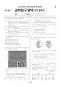

문제지

2010학년도 대학수학능력시험 · 2009년 11월 시행
2010학년도 수능 과학탐구 지구과학Ⅰ 1등급컷은 원점수 48점(추정)입니다.
원점수 1등급컷은 공식 발표값이 아니라 EBSi·입시기관 값입니다. 등급별 값은 등급컷 표, 출처 구분은 데이터 원칙에 있습니다.

시험지를 먼저 풀어 보세요. 등급컷·표준점수·난이도는 흐리게 가려 뒀어요.
| 등급 | 원점수 | 표준점수 |
|---|---|---|
| 1 | 48 | 65 |
| 2 | 44 | 62 |
| 3 | 41 | 59 |
| 4 | 35 | 54 |
| 5 | 26 | 47 |
| 6 | 19 | 41 |
| 7 | 14 | 37 |
| 8 | 10 | 33 |
등급별 컷 · 공개 원점수 추정 · 평가원 표준점수 분포로 검증 · 만점 50점
19번 복수 정답
이의신청 2문항 · 평가원 상세 답변 2문항
19번복수 정답
실제 일식 지속시간 계산 결과에 따라 ③ 외에 ①도 정답
이의 요지
이의 신청 내용을 요약하면 두 가지입니다.
평가원 답변
본 문항은 북태평양 해수의 온도와 염분 자료를 해류의 분포와 연관 지어 설명하는 능력을 평가하는 문항입니다. 이의 신청 내용을 요약하면 두 가지입니다. 첫째, 지도에 나타난 A의 위치는 캘리포니아 해류가 흐르는 지역이므로 <보기> ㄱ의 진술에서 A에 북태평양 해류가 흐른다는 것이 옳지 않다는 주장이고, 둘째, 북태평양의 아열대 순환은 적도에서 더워진 물로 형성된 쿠로시오 해류의 수온이 가장 높고, 이 해수가 북태평양 해류와 캘리포니아해류를 거치면서 수온이 지속적으로 내려가게 되므로 수온이 가장 낮은 해역은 지도 상의 세 점 중 가장 오른쪽에 위치한 A가 되어 이를 전제로 문제를 풀었을 경우 <보기> ㄷ만 옳은 진술이 되며 이에 따라 정답을 수정해야 한다는 주장입니다.우선 첫 번째 이의 신청 내용에서는 알래스카 아래쪽의 점을 A라고 전제하고 있으며, 그 위치를 근거로 캘리포니아 해류라고 주장하고 있습니다. 하지만 캘리포니아 해류는 캘리포니아 해안을 따라 북에서 남으로 흐르는 해류를 일컫는 말이며, 북태평양 해류는 북태평양을 서에서 동으로 흐르는 해류입니다. 따라서 A의 위치는 북태평양을 서에서 동으로 흐르는 해류가 지나는 위치로 판단할 수 있고, 이에 따라 북태평양 해류로 보는 것이 타당합니다. 또 이의 신청자가 현재 A의 위치를 캘리포니아 해류가 시작되는 점으로 판단했다고 해도 그것이 A에 북태평양 해류가 흐른다는 사실과 상치되지 않습니다. 두 번째 이의신청 내용에서 ‘캘리포니아 해류는 한류이므로 북태평양 해류보다 온도가 낮다’고 판단하고 있으나 한류와 난류를 판단하는 근거는 해류의 영향을 받지 않는 동일 위도 상의 해역에 비해 그 해역을 지나는 해류의 수온이 낮거나 높은 것으로 판단하는 것이 옳으며 실제 해양의 수온 분포는 위도에 가장 큰 영향을 받습니다. 따라서 지도 상에 가장 고위도인 지점인 알래스카 남쪽의 관측 지점을 A해역으로 보는 것이 타당합니다. 따라서 이 문항의 정답에는 오류가 없습니다.과학탐구 영역 : 유형(과목) : 지구과학Ⅰ
이의 요지
이의 신청 내용은 크게 두 가지로 요약할 수 있습니다.
평가원 답변
본 문항은 고등학교 지구 과학Ⅰ 교육과정에서의 달의 운동과 위상 변화를 관찰하여 태양, 달, 지구와의 관계를 이해하고, 국민공통기본교육과정에서 다룬 일식에 대한 개념을 바탕으로 지난 2009년 7월 22일에 일어난 일식 자료를 해석하여 타당한 결론을 내릴 수 있는 능력이 있는지를 평가하는 문항입니다.이의 신청 내용은 크게 두 가지로 요약할 수 있습니다. 첫째는 <보기> ㄴ에서 개기 일식이 일어나는 A지역과 부분 일식이 일어나는 B지역의 실제 일식 지속 시간은 진술 내용과 다르고, 이러한 사실을 수험생들은 문제를 풀면서 계산할 수 없기 때문에 문항에 오류가 있다는 것입니다. 두 번째는 개기 일식의 지속 시간은 부분 일식의 지속 시간보다 매우 짧기 때문에 <보기> ㄴ은 틀린 진술이므로 정답이 수정되어야 한다는 것입니다.첫 번째 이의 신청 내용에 대해서는 학회와 전문가의 자문을 구하였습니다. 자문 내용을 종합하면 다음과 같습니다.학습한 과학 개념에 대한 이해를 바탕으로 학생들의 사고력을 평가하기 위한 수능 문항의 성격에 비추어 볼 때, 이 문항은 문항에 제시된 조건으로부터 일식중심선상에 위치한 A점의 일식 지속 시간이 일식중심선상에서 떨어져 있는 B지점보다 길다는 논리적인 판단이 가능하며, 그 결과 정답은 ③번이 됩니다. 하지만 정확한 일식 지속 시간은 최대식심지역의 위치에 따라 달라질 수 있으며 이 문항에서 제시하고 있지는 않지만 2009년 7월 22일의 경우, 최대식심지역이 태평양 가운데(동경 143도 21.6분, 북위 24도 36.7분)에 위치했기 때문에 복잡한 계산 과정을 통해 확인된 실제의 일식 지속 시간은 B지역이 A지역보다 길게 나타났습니다. 또한 일식 지속 시간을 계산하기 위해서는 최대식심지역, 위도, 일식중심선 등 많은 자료가 필요하고 복잡한 계산 과정을 거쳐야 하므로 문항에 주어진 조건만으로 고등학생이 이를 계산을 통해 판단하기는 불가능하다고 봅니다.학회와 전문가들의 자문 결과를 토대로 출제위원과 외부전문가가 참여한 이의심사실무위원회에서는 ‘고등학교 수준의 개념 이해와 문제에 주어진 조건만으로 풀었을 때의 정답인 ③번과 교육과정의 범위와 수준을 넘어서지만 과학적 사실에 부합하는 ①번을 함께 정답으로 인정하는 것이 타당하다’는 결론을 내렸고, 이의심사위원회에서는 이를 최종 확정하였습니다.두 번째 이의 신청 내용은 개기 일식에 대한 오해에서 비롯된 것으로 보입니다. 개기 일식은 달의 본그림자가 드리워지는 지역에서 관찰할 수 있는 현상으로 태양이 달에 완전히 가려진 상태이므로 지속 시간이 몇 분 정도로 짧은 것이 맞습니다. 그러나 이러한 개기 일식 현상의 전후에 달에 의해 태양의 일부분이 가려지는 부분 일식 현상이 함께 일어나므로 일식 지속 시간은 이러한 부분 일식→개기 일식→부분 일식의 전 과정으로 보는 것이 타당하며 이러한 경우 일반적으로 달의 반그림자 중심부가 지나는 개기 일식 지역이 반그림자 주변부가 지나는 부분 일식 지역보다 일식 지속 시간이 길 것이라는 것은 판단할 수 있어 정답에 영향을 주지 않습니다.과학탐구 영역 : 유형(과목) : 생물Ⅱ
지구과학Ⅰ 19번(2009년 7월 22일 일식 자료)은 일선 교사와 수험생이 'A 지역 일식 지속시간이 반드시 더 길다고 할 수 없다'고 지적해, 실제 계산 결과를 근거로 ③ 외에 ①도 정답으로 인정됐다. ①을 고른 응시자는 약 21%였다.
시험 전체 관련 보도 2건은 2010학년도 대학수학능력시험 회차 페이지에 모아 두었어요.
발행 기관: 한국교육과정평가원(KICE). 파일 위치: 이 사이트가 보관한 사본. 저작권은 발행 기관에 있습니다. 원본과 다르거나 게시 중단이 필요하면 연락처로 알려 주세요. 등급컷 출처 구분은 데이터 원칙에서 설명합니다.
막대 색은 역대 대비 난이도 · 진한 막대가 이 시험 · 막대를 누르면 그 회차로 이동
| 회차 | 1등급컷 | 표점 최고 | 1등급 표점 | 난이도 |
|---|---|---|---|---|
| 수능2010학년도이 시험 | 48 | — | 65 | 보통 |
| 수능2009학년도 | 44 | — | 67 | 어려움 |
| 수능2007학년도 | 47 | — | 64 | 쉬움 |